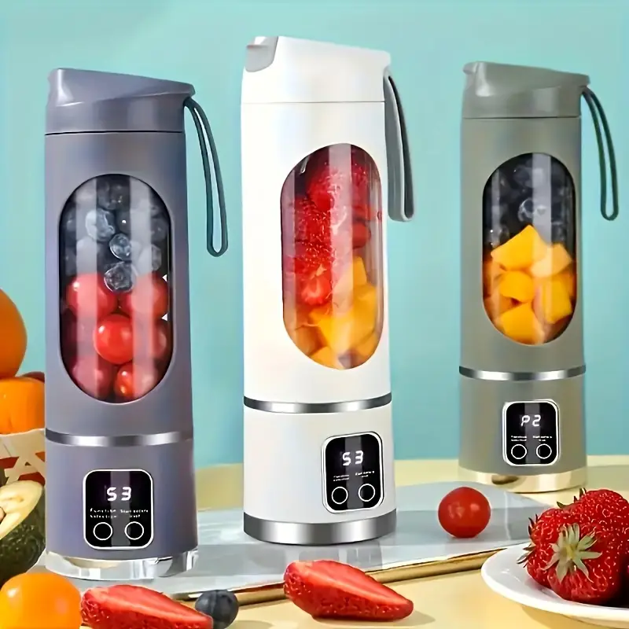
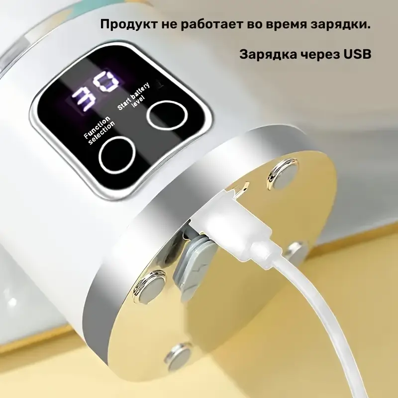
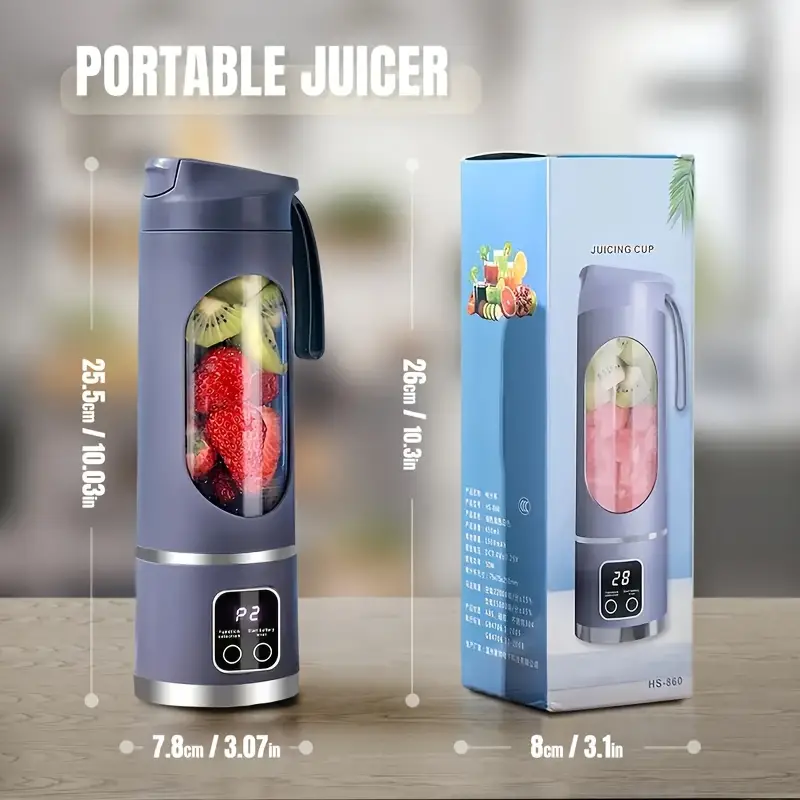

Кінець пропозиції через:
Кінець пропозиції через:
годин
хвилин
секунд
00 :
00 :
00

Сертифікати якості

Швидка доставка

Оплата при отриманні
-
Економія 50%
399 грн -
Стара ціна
800 грн
Портативний USB-блендер 12 лез, 3 швидкості – здоров'я та свіжість завжди поряд!
Відкрий собі зручність та користь у компактному форматі з нашим портативним USB-блендером! Ідеальний помічник для активних людей, які дбають про здоров'я та хочуть мати можливість готувати свіжі напої у будь-якому місці – на роботі, у спортзалі, у поїздці чи просто вдома.
Завдяки компактності та потужності він відмінно підходить для приготування:
Свіжих фруктових та овочевих смузі 🍎🥬
Молочних коктейлів і протеїнових напоїв🥛
Фрешей та натуральних соків 🥕🍊
Дитячого харчування та пюре 👶
Охолодженних напоїв з льодом ❄️
Основні переваги:
- Портативність та мобільність – легкий та компактний, поміщається у рюкзак чи сумку, не займає багато місця.
- Живлення від USB - заряджайте блендер від ноутбука, павербанка, автомобільного адаптера або будь-якого другого USB-порту. Кабель для заряджання йде в комплекті. 
- Потужні леза – стійкі до зношування, легко подрібнюють фрукти, овочі, ягоди, лід та навіть горіхи.
- Зручна кришка з ручкою – можна брати блендер як пляшку, носити із собою та пити прямо з нього.
- Об'єм до 500 мл – оптимальний для однієї порції смузи чи коктейлю. 
- Просте миття – чашу та леза легко промити під проточною водою, швидко підготувати до наступного використання.
Умови доставки

Часті питання
-
Так, але краще різати заморожені фрукти на менші шматочки — моторчик потужний, проте для довгої служби варто уникати надмірного навантаження.
-
Ні, електронну частину мити в посудомийці не можна. Kолбу можна промити вручну.
-
Ні, колба не вбирає запахи, але після приготування краще одразу сполоснути чашу, щоб уникнути залишкового аромату.
-
Не рекомендується запускати його на «суху» — для збереження моторчика обов’язково додавайте трохи рідини.
-
- В якому випадку та в які строки можна повернути товар?
Якщо товар виявився неналежної якості, ви маєте право повернути його протягом 14 днів з дня покупки. - В якому випадку та в які строки можна обміняти товар?
Якщо товар належної якості, але не підійшов розмір, ви маєте право обміняти його протягом 14 днів з дня покупки. - Умови повернення/обміну товару належної якості:
Товар належної якості (який відповідає опису на сайті і без дефектів) можна повернути, якщо збереглися товарний вигляд і властивості: оригінальна упаковка, бірки без пошкоджень і відсутність слідів експлуатації. Повернення здійснюється за рахунок покупця через транспортну компанію Нової Пошти. - Умови повернення товару неналежної якості:
Повернення товару неналежної якості можливо в разі наявності дефектів або невідповідності опису на сайті. Повернення можливе протягом 14 днів з моменту покупки при виявленні дефектів на етапі огляду або примірки товару (без експлуатації). - Як відправити повернення?
Упакувати товар, включаючи оригінальну упаковку та бірки. Заповнити заяву на повернення, звернувшись до менеджера. Відправити через Нову Пошту після погодження з менеджером. - Повернення коштів:
Кошти повертаються протягом 5 днів після отримання посилки на відділенні Нової Пошти.
- В якому випадку та в які строки можна повернути товар?